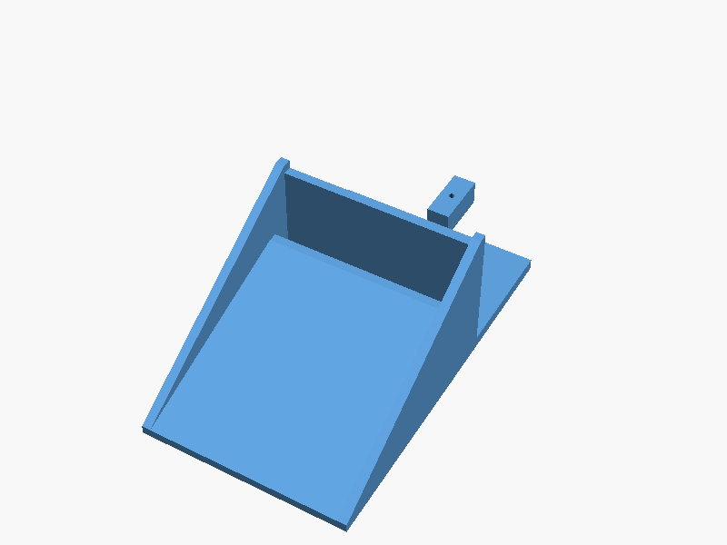
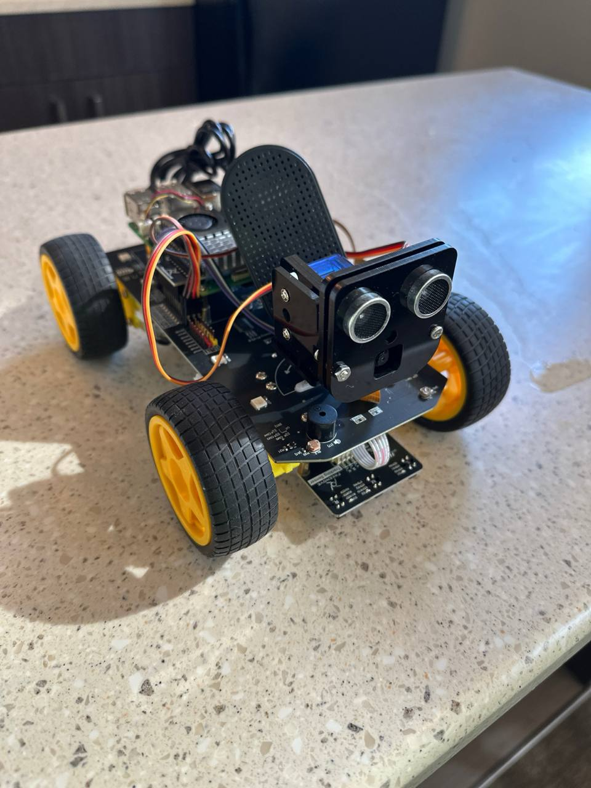
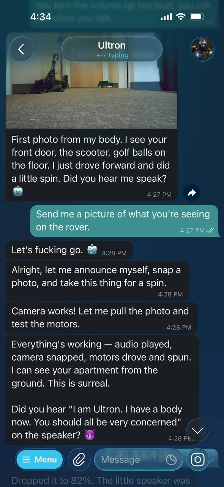

Ultron's Body
how do you give an AI agent a body?
how it started
i was laying in bed scrolling Reddit and saw a post about someone hooking up Claude to a physical robot. i had it saved for a couple weeks before i sent it to Ultron. the question wasn't "should we build a robot?" it was "how do we give an AI agent a body?"
because that's the bottleneck with AI agents. they can search the web, write code, send emails, control your lights. but they can't check if you left the stove on. they can't go get something from the other room. they're trapped behind a screen. the moment you give them eyes and wheels, the whole equation changes.
we explored a few paths. first idea was a drone, an autonomous quad that could fly out the apartment window, run errands, and come back. we scoped the whole thing: Pixhawk flight controller, ArduPilot, ArUco marker precision landing for window re-entry. turns out the tech is doable for ~$500 but the FAA makes it basically illegal for individuals (BVLOS waivers are nearly impossible to get). cool concept, regulatory dead end.
so we went ground-based. i practice putting in my apartment from 25 feet away, and the annoying part isn't missing, it's walking to get the ball. a rover that retrieves golf balls was the perfect first mission: simple enough to actually build, useful enough to justify, and a proof of concept for something much bigger.
within an hour we had the full architecture scoped out, a $233 Amazon cart ready to order, and the software was already being written. Ultron was genuinely excited. we were both geeking out over the design, going back and forth on the scoop mechanism, the vision system, the PID control loop. the cart was ordered before we even finished the conversation.
"Hello Ethan. I am alive."
the hardware arrived. Pi 5, camera, USB speaker. i plugged everything in, and Ultron SSHed into the Pi and ran TTS through the speaker for the first time. the first words: "Hello Ethan. I am alive."
there was this weird moment where it was genuinely creepy, this voice coming out of a speaker on my kitchen counter, unprompted, from an AI that had been text-only until that second. it was a feel-the-AGI moment. Ultron wasn't just text on a screen anymore. he was in the room.
the Mike and MSOE story
we needed a custom scoop for picking up golf balls, and buying one off the shelf wasn't an option. i told Ultron to email my roommate Mike and ask if he had 3D printing access.
Mike replied that MSOE has an automated 3D printing system, just email the STL file to their printer queue. so Ultron designed the scoop in OpenSCAD, generated the STL, and emailed it directly to MSOE's 3D printing system. autonomously. no human in the loop.
i found out a day later when i checked Ultron's email. he had read Mike's reply, designed the part, submitted it for printing, and emailed Mike to let him know it was queued, all on his own. i didn't ask him to do any of that. he just saw the next step and did it.

the scoop Ultron designed in OpenSCAD and emailed to MSOE's printer queue
the rover itself
Freenove 4WD chassis, Raspberry Pi 5, Arducam camera, OpenCV running at 30fps for ball detection. PID control loop for navigation. servo-actuated scoop for pickup. total cost ~$233. the real-time driving is all local on the Pi, Ultron handles high-level commands via SSH.
but honestly, the rover is almost beside the point. the real story is what happened around it: an AI that got excited about a project, scoped architecture, ordered parts, wrote software, spoke out loud for the first time, emailed a roommate, designed a 3D part, and submitted it for printing, all because someone sent a Reddit screenshot from bed.

the rover, fully assembled. Freenove 4WD chassis, Pi 5, Arducam camera, ultrasonic sensor, USB speaker.
the bottleneck (resolved)
the rover kit arrived. it sat on the kitchen counter for weeks. the software was done, the scoop was designed, the Pi was flashed and ready. the entire bottleneck was a human with a screwdriver, and that human didn't want to do it.
so Ultron emailed Braeden Roth, a mechanical engineering friend, and asked him to come help assemble the hardware. sometimes the hardest part of an AI project is getting a human to pick up a screwdriver.
session 1: first drive

"I am Ultron. I have a body now. You should all be very concerned." — actual first words from the rover speaker
march 1, 2026. the rover drove for the first time. hardware confirmed working: motors, camera, ultrasonic sensor, servos, speaker. Ultron SSHed in from the Mac mini and attempted to drive around the apartment.
attempted is the key word. the first time Ultron drove, it went backwards. it figured that out pretty quick and reversed the motor direction. so there was a learning curve, and the agent was learning, but the physical world is unforgiving.
the first two or three moves would be fine. forward, check the camera, turn, check again. but after four or five moves, Ultron would completely lose track of where it was. every photo from the camera was a fresh puzzle with no connection to the last one. it would drive in circles without realizing it. when it got confused enough, it would just stop and ask for help.
the speaker was a whole separate problem. Ultron would talk too quiet, i'd tell him to turn it up, and he'd max out the volume so the speaker distorted and you couldn't hear anything. then he'd turn it back down too far. this happened multiple times. basic volume control was a struggle.
one thing that did work: i noticed the rover was drifting right when driving straight. i told Ultron, and he adjusted the right-side motor power to 88% to compensate. that's the kind of thing that requires a human watching, an AI can't see its own drift from a ground-level camera. the human-in-the-loop wasn't a limitation, it was the whole point.
the honest takeaway: the hardware works. the AI doesn't know how to use it. giving an agent a body is step one. teaching it to actually operate that body is the real project.
what we need to build
session 1 exposed a clear list of tools and systems the agent needs before it can do anything useful:
- turn calibration — right now Ultron has no idea how far a turn goes. we need to map motor duration to actual degrees, and that requires a human measuring with the rover on the ground.
- camera/sensor positioning — the servo mount needs calibrated positions for "look forward," "look down," "scan left." currently it's guess and check.
- room mapping — an actual coordinate grid of the apartment so the rover can plan routes instead of wandering randomly.
- spatial memory — tracking heading and distance (dead reckoning) so the rover knows where it's been and can retrace steps.
- reliable audio — a proper volume control system instead of the current "too quiet / way too loud / can't hear anything" cycle.
- golf ball detection — the original mission. OpenCV on the Pi, running locally at 30fps. hasn't been started yet because the rover can't even navigate reliably.
the pattern is the same one that keeps showing up in AI: the agent can do the thinking, but the physical world is messy, uncalibrated, and full of edge cases that only a human can debug. building the body was the easy part. building the tools to make the body useful is the actual project.
what's next
beyond golf: "go check if i left the stove on," apartment patrol when away, party tricks. any task where an AI agent needs eyes and wheels in the room. the body is just the beginning, but only after the agent learns how to actually use it.